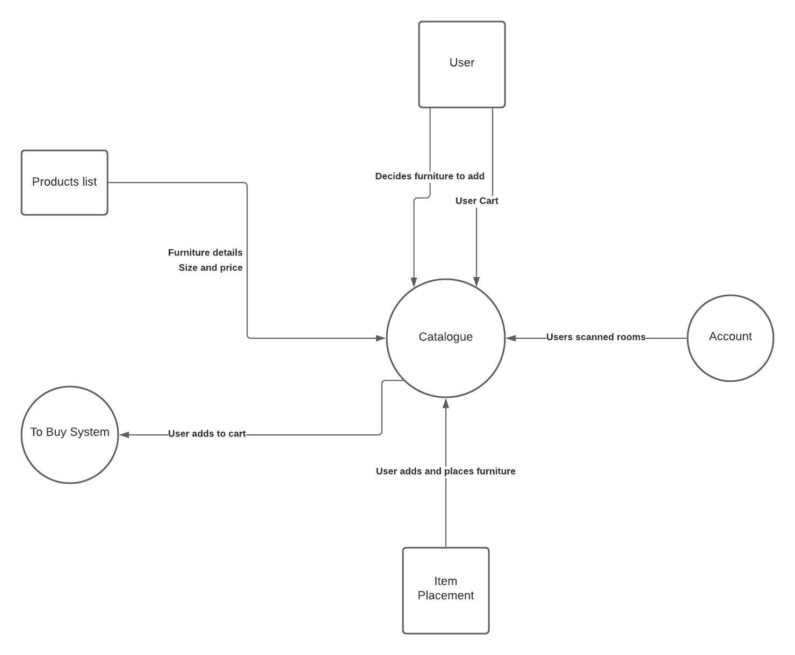

Description
Redecorating a room may be a daunting experience for some people. Some people might find it hard to visualise how a room is going to look like when they purchase a new television set or a new L-shape couch. Furniture in general is also not cheap. FlippingRooms does not want the user to make a decision to purchase something that will create a hole in their wallets and potentially regretting it later on in the future. Well, FlippingRooms can be a solution to all of those problems.
FlippingRooms provides a catalogue of pre-installed furniture in the application. Users are allowed to experiment with different kinds of furniture to enhance the new look of their room and to make sure they are liking the final design before making any final decisions.
|
Christian is shopping for some furniture to redecorate his room.
He prefers to use his phone when it comes to shopping as
it is easier to navigate through catalogues on his phone.
Christian tends to get confused when he shops on a webpage
instead of an app as webpages tend to have many functions
and pages. Christian stumbles upon FlippingRooms
and realises this app come with a build in catalogue feature.
The catalogue feature allows him to browse through a huge variety
of furniture at ease
|
1. Christian clicks on FlippingRooms app
2. Christian logs in / signs up on the app
3. Christian clicks on the 'Start remodelling'button
4. Christian click on the 'Catalogue'button on the features page
5. Christian browses through all the different tabs of furniture offer on FlippingRooms app
6. Christian is able to click on specific types of furniture to look at
|
System Context Diagram

Testing
Open catalogue with no items added in
Test adding an item to the catalogue
Test the ability to move and place an item from the catalogue within a room
Browse through different items in the catalogue